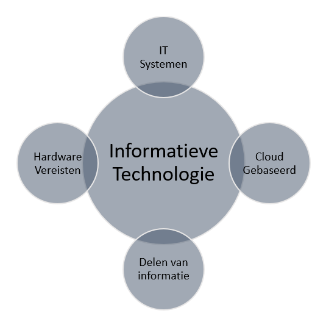

Minor Smart Industries portfolio van Rob ten Brinke
Op elke pagina staan verschillende onderwerpen die behandeld worden. Deze onderwerpen zijn gesorteerd op de verschillende vakken die behandeld zijn bij de Minor.
Deze pagina gaat over Smart Start. Bij Smart Start wordt de student Journey omschreven. Hieronder vallen de doelen die ik voor mezelf gesteld heb en een klein onderzoek over het introduceren van nieuwe, industry 4.0, technieken in organisaties.
Bij dit onderzoek heb ik gekeken naar hoe een smart industry 4.0 techniek nou het beste geïntroduceerd kan worden bij een bedrijf. Hier heb ik gekeken naar wat fout kan gaan en wat mogelijk oplossingen zijn om dit te implementeren
Smart Industry 4.0 zijn de meest moderne, nieuwe technieken die te maken hebben met IoT, de cloud en systemen die cognitieve en meer automatisering functies hebben. Deze nieuwe technieken zijn dus slimmer en steeds geavanceerder. Met deze technieken kunnen dus machines afgelezen worden, analyses gedaan worden en geheel nieuwe toepassingen gemaakt kunnen worden. Bijvoorbeeld door 3D printen te gebruiken in de zorg, als oplossing voor de druk op het maken van protheses [1][5].
Deelvragen
Welke gevaren zijn aanwezig voor het niet slagen van het introduceren van
een nieuwe (Smart Industry 4.0) techniek in een bedrijf?
Welke systemen/vereisten moeten aanwezig zijn om een nieuwe (Smart Industry 4.0) techniek te introduceren in een bedrijf?
Door deze vragen te beantwoorden moet een duidelijke manier komen welke opties mogelijk zijn om een nieuwe industry 4.0 techniek te introduceren en wat de valkuilen hierbij zijn. Deze vragen zijn gekozen naar aanleiding van persoonlijke ervaring, het willen inbrengen van nieuwe technieken terwijl sommige valkuilen nog niet opgelost zijn.
Om een nieuwe (Smart Industry 4.0) techniek te introduceren in een bedrijf is een goede IT structuur nodig. Deze zorgt voor een omgeving waarbij de processen gecontroleerd worden en data verzameld wordt. Door data te verzamelen kan deze gebruikt worden voor analyses en procesoptimalisaties. Het (onder)houden van een IT systeem die klaar is voor een Smart Industry 4.0 techniek zijn verschillende vereisten voor nodig. Deze v ereisten zijn te verdelen in vier groepen. Deze groepen worden hieronder toegelicht [1][2].

Het goed delen van informatie met de rest van de organisatie zorgt voor veel samenhang tussen verschillende afdelingen. Wanneer veel samenhang tussen afdelingen aanwezig is dan is iedereen op de hoogte van de prestaties van de processen, op deze manier worden data bronnen beter en effectiever gebruikt [2].
Om een computer gestuurd programma/systeem te kunnen draaien is een IT systeem nodig. Deze zorgt voor ondersteuning en dat alles het blijft doen. Zonder een IT systeem zou een industry 4.0 techniek niet werken. Wanneer een IT systeem goedwerkend is dan zal een IT systeem meteen voor veiligheid zorgen van de verzamelde data [2].
Het werken met de Cloud zorgt ervoor dat op een intelligente manier de verschillende processen beheerd kunnen worden. Tevens is de data vanuit meerdere locaties beschikbaar om te bekijken. Hierdoor kunnen op meerdere plekken analyses uitgevoerd worden [2].
Om een nieuwe techniek te introduceren moeten een aantal vereisten/systemen aanwezig zijn. Deze systemen moeten ervoor zorgen dat een nieuwe techniek de juiste onderbouwing heeft om goed te werken. Zo heeft een nieuwe computer een internet verbinding nodig en beeldschermen [2].
Wanneer alle processen onder controle zijn is een organisatie klaar voor een nieuwe techniek. Het zoeken van onderliggende problemen via een Lean structuur zou kunnen helpen zodat die problemen ook opgelost worden. Wanneer voldaan wordt aan het schema van Paul Kalis van Qander of de beschreven vereisten is een organisatie klaar. Mits goed gekeken wordt naar de valkuilen die beschreven staan, wanneer hier geen rekening mee gehouden wordt is meer kans op een onsuccesvolle implementatie.